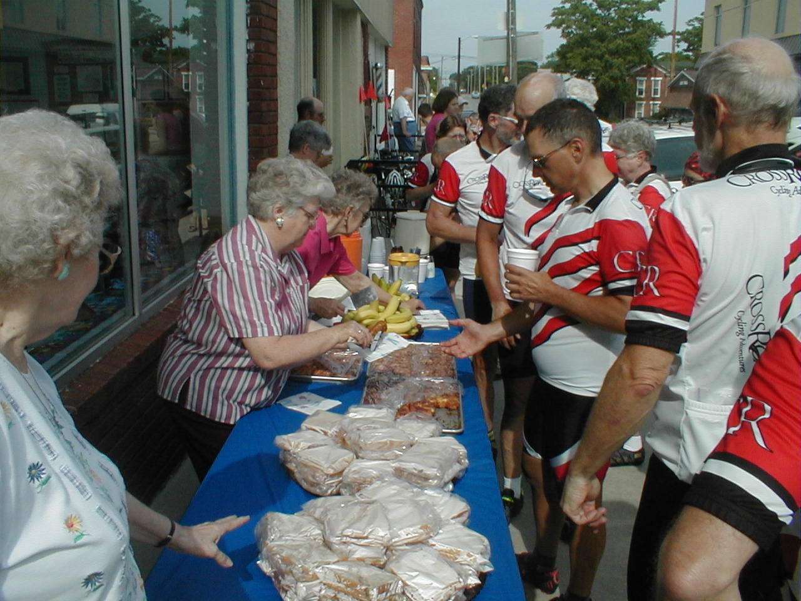

Day 27: June 8, Saint Joseph, MO to Chillicothe, MOPrevious Day - Home - Next Day Photo of the DayOur sag stop in Maysville, Missouri. :) Keegan's LogDay 27: June 8, Saint Joseph, MO to Chillicothe, MO Mileage: 86.4 milesWeather: Warm, Sunny, No winds (woo-hoo!) Vertical Climb: 2800 feet Riding Time: 6:00 Today was a wonderful ride, we had sunny skies and no wind at all, almost ideal weather for our introduction to the Missouri rolling hills. Breakfast was at 7:00, but since we had to leave at 7:15, almost everyone opted for the hotel's continental breakfast instead. I spent some time changing a night flat, a patch had gone bad this time. Today was a team day, so everyone had on their CrossRoads jerseys. The reason for the team day was the sag stop in Maysville, the whole town comes together and prepares a stop for us, more about that in a second... In order to ride into Maysville as a group, we were to meet at the side of the road at mile 30.7, a half mile before the stop. Tracy gave us until 9:20 to get there, a swift pace on the tall hills, but we made it by about 9:25 and the group waited until about 9:30 before forming a 2 by 2 line and descending into the town. They had roped off a section of the street in front of the Historical Society, and they had a table set up with homemade cinnamon rolls, sandwiches with homemade jelly, lemonade, fruit, the whole works. There were lots of people out to meet us, even a boy getting everyone's autographs. We ate some food and signed the register before wandering through the museum, an extensive collection of old stuff. This was certainly the best sag of the tour, kudos to Maysville for putting everything together. After the sag we continued on Route 6 for a good distance, passing the towns of Weatherby and Altamonte. The hills here are something else, there is rarely a flat spot, only up or down. The good news is that you can usually coast part way up the hill from the momentum on the downhill, the bad news is that some of the uphills seem a lot longer than the downhills. The hills really start getting to you after a while too, the whole day is just up and down with little relief. The second sag was just a roadside stop, we filled up our bottles, had some of the leftover sandwiches and cinnamon rolls from the morning, and moved on. The last stretch was much like the others, up and down all the way to the hotel. We made it to the hotel early today, by 3:30 we had found our room and, yes, crashed onto the beds. Route rap was outside on the drive, followed by a catered meal served poolside. Holly had been thinking about joining us for the weekend, she left after work today and headed out to Chillicothe to meet us. Holly arrived not long after dinner, I'm glad she came back and I get to visit with her again. Tomorrow is famous for its roller coaster hills, more ups and downs along the road to Boston. Phil's LogI feel sorry for kids traveling today. When I was a kid, and we stayed at motels, the swimming pools were big and deep and had diving boards. The one next to me is two feet deep at the shallow end, four at the deep. Everywhere it says "No Diving". Everyone agrees that today was a tough day. Not as bad as the desert, and not as bad as the headwinds into McPherson, Kansas, but Missouri has HILLS. About 30 miles into the ride we rode, with fanfare, into Maysville, DeKalb County, Missouri. Maysville was the home to the first person ever to ride a bicycle around the world, and a high-wheeler at that. So the town is a little bicycle-happy. But they greet the CrossRoads tour every year, and this was no exception. We all grouped at the top of the HILL that led into town and rolled in, two-by-two. All of the townspeople were gathered on Main Street, beside the courthouse, to welcome us. Kids were sitting on railings and windowsills, older folks were gathered around the DeKalb County Museum. They had baked wonderful cinnamon sticky buns for us, and had coolers of lemonade and iced tea. There were tons of bananas. And they had two huge bowls of individually wrapped peanut butter & jelly sandwiches for us, with jelly they had MADE! We parked our bikes against the old storefronts and formed a line, and the ladies of the town weighed us down with their hospitality and baking. We were also asked to tour their museum, and Traci,our leader, was offered a ride on THE high wheeled bicycle. (Declined, it belonged in the museum!) It was such an outpouring of kindness that it just overwhelmed us. No one wanted to leave, but we had 50+ hilly miles ahead of us. With a hope to return someday, we pedaled away. The hills magnified right away. Missouri doesn't do hills like anywhere else we have seen. Though my watch-altimeter showed no net change, there was never a flat stretch of road (okay, one, the Great River valley.) At a number of places we stopped to photograph the road ahead, and to dread it. Straight ahead of us one could see peak after peak in the landscape that the great glacier had carved just to test us. The hills were quick, maybe five to eight to the mile. And you could rarefy gather enough momentum going down to even halfway crest the next. One moment you'd be standing on the pedals grinding away at 4 mph, the next minute you'd be flying at 30, then back to 5 or 6. You'd peak a crest hoping to see a downhill and the view was yet more roller-coaster hills. It was like a Hilly Hundred, all in one day, without the long downhills. Lynn, Ethel's roommate paused at the top of one to douse her head and shirt with water. It was not a hot day, but the hills just took everything you had, and demanded more. Rolling in to the motel at the end of the ride was never so good. Tomorrow's sheet bills the day as Roller-coaster hills. Today was just Maysville. I'm overdue in fulfilling a promise of an interview with JJ and Leslie. They are our stars at the young end of the spectrum...., long with Keegan. JJ and Leslie, who were married May 28, 2000, live near 39th Street and 1st Avenue in Manhattan, in a 14th floor apartment. Both 35-ish, JJ was born in Manhattan and grew up in New Rochelle. He was an Economics major at Cornell, and holds an MBA from the University of Chicago. Leslie is from Dallas, a Communications graduate of UT at Austin. They met through a common friend through a wedding in London, but at he time Leslie wasn't in a "meeting mood". JJ, interested, tried again six months later and a year later Leslie found herself moving to the Big Apple. Their persistence shows itself well also in the current endeavor. Both Leslie and JJ describe themselves as on sabbatical. Leslie is currently taking a summer break from a two year theater acting study at the Atlantic Theater Company in Manhattan. She hopes long term to act and to write, and is cooking several stories based on real life. JJ just sold his portion of a day trading school and investment firm that he was involved with for four years. Growth prospects were down with changes in the market. The key to day trading, he emphasizes, is discipline. When he returns? JJ needs to figure that out. He plans to volunteer as a math tutor at a school for gifted students in Harlem. He loves math, algebra to geometry to calculus, and while volunteering he plans to figure out what he wants to do next. I'll continue next time with Leslie and JJ, I have many notes left. Why did they decide to do this trip? And I'll ask Keegan to run a photo of them on the website tomorrow. But for now it is late. My spell checker on this tiny Psion runs a little slowly, so I'll call it a day if I may. Thanks to all for following us. And a reminder, this is a charity effort for the Diabetic Youth Foundation. Many have pledged, and we hope & trust that YOU will too. Details later. Thanks for all the kind wishes and e-mail messages. |
{kind=link}